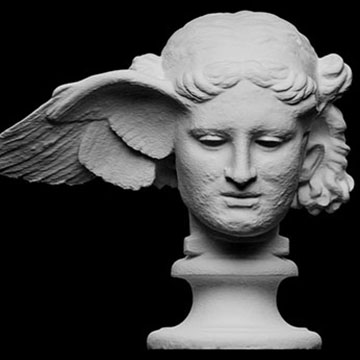
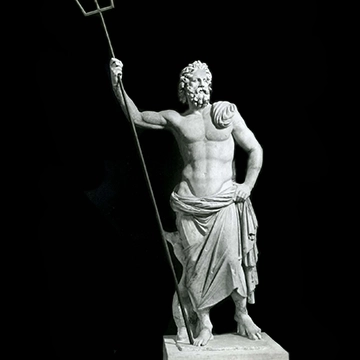
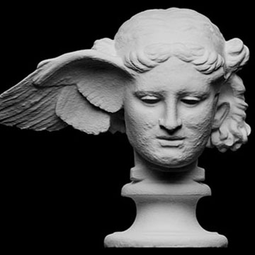
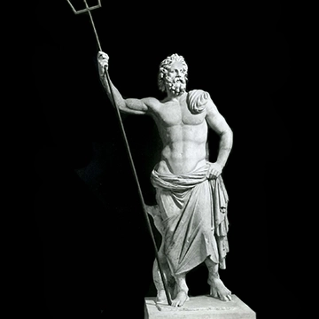

The gods of the ancient Greek pantheon are divided into various categories on the following pages. The first of these--the Olympian gods, Titan gods, and primordial gods--represent the three generations of deities to rule the cosmos. The next five categories divide the gods by domain, namely the gods of sky, sea, earth (rustic and agrarian), and underworld. The final sections contain the daemones--minor deities or spirits representing abstract ideas, emotions and conditions--and apotheosed mortals.
Greek mythology has had an extensive influence on the culture, arts, and literature of Western civilization and remains part of Western heritage and language. Poets and artists from ancient times to the present have derived inspiration from Greek mythology and have discovered contemporary significance and relevance in the themes

 


